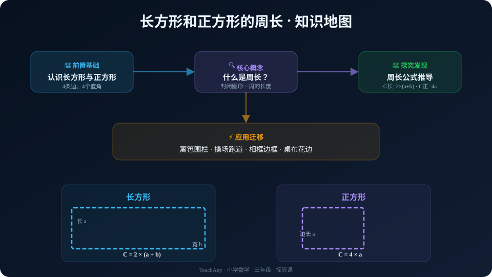

学校要围一个长方形花坛，需要买多长的篱笆？跟着 AI 学伴一起动手探究，自己发现周长的秘密！

选一个你关心的问题，后面的探索和 AI 学伴都会围绕它展开。
👆 选择或输入后，本课会围绕你的问题展开。
先看看你对长方形和正方形的边了解多少。
❓ 一个长方形有几条边？其中对边有什么关系？
📌 已经知道：长方形有4条边，对边相等；正方形4条边都相等。
❓ 但是问题是：当我们需要知道"围一圈需要多长"时，不能一条边一条边去量，有没有更快的办法？
🔬 所以这一节要解决：理解"周长"就是图形一周的长度，然后找到快速计算的方法。
👆 点击 "演示周长" 按钮，小蚂蚁会沿着图形的边走一圈——这一圈的总长度就是周长！
拖动下面的滑块改变长方形的长和宽，观察周长如何变化。你能发现什么规律？
改变长和宽，把数据填入下表。观察最后一列，你发现了什么？
| 序号 | 长 a (cm) | 宽 b (cm) | a + b | 周长 C (cm) | C ÷ (a+b) = ? |
|---|
观察最后一列 "C ÷ (a+b)"，不管长和宽怎么变，这个值始终是 ____？
这意味着：周长 = (长 + 宽) × ____
长用 a 表示，宽用 b 表示
也可以写成 C = 2a + 2b
边长用 a 表示
正方形是特殊的长方形（a = b）
一个长方形的长是 10 厘米，宽是 5 厘米。以下哪个说法正确？
一个长方形花坛，长 = 6 米，宽 = 4 米，它的周长是多少？
📝 解：a = 6, b = 4
C = (6 + 4) × 2 = 10 × 2 = 20 米
一个正方形菜地，边长 = 25 米，周长是多少？
小明绕着一个长 50 米、宽 30 米 的操场跑了2 圈，一共跑了多少米？
一个长方形，长 12 厘米，宽 8 厘米，周长是多少？
王阿姨要给一块长方形桌布缝花边。桌布长 180 厘米，宽 90 厘米，至少需要多长的花边？
用一根 36 厘米长的铁丝围成一个长方形（长和宽都是整厘米数），你能围出几种不同的长方形？哪种围法面积看起来最大？
提示：长 + 宽 = 36 ÷ 2 = 18，找出所有 a+b=18 的整数对。
💡 这个挑战其实就是"周长一定时，长和宽怎么分配"的问题——为以后学面积埋下伏笔！
学校操场是一个长 60 米、宽 40 米的长方形。体育老师让学生跑 3 圈热身，每个学生跑了多少米？
回到开头的问题——给花坛围篱笆、绕操场跑步、给照片做边框，这些问题的本质都是在求周长。
看看这个知识点在整个数学学习中的位置：
AI 学伴不会直接告诉你答案，而是用引导式提问帮你自己想通。
👋 你好！我是你的 AI 数学学伴。试着问我一个问题吧，我会用问题引导你思考。
试试问："长方形周长为什么是 (a+b)×2？" 或 "正方形是特殊的长方形吗？"